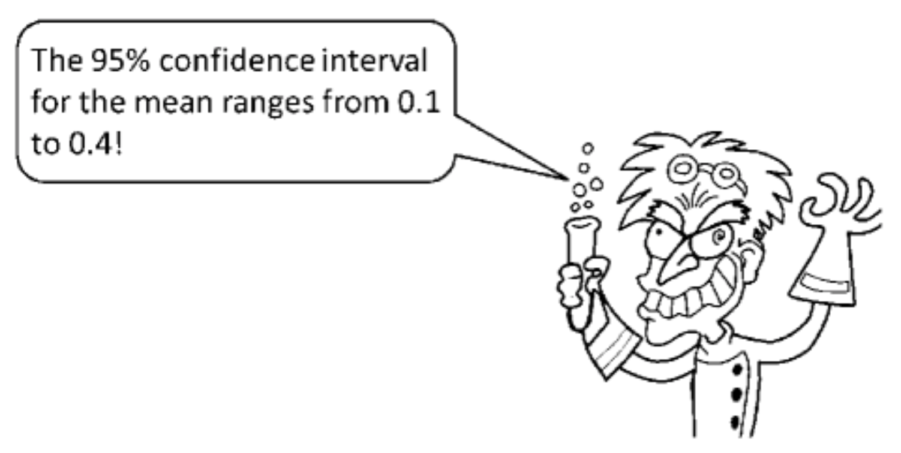

Chapter 5 Basics of _magpie
5.1 Basic concepts and architecture
The basic concepts and architecture of _magpie is covered in the _magpie quick start guide.
5.2 A first example
We will reimplement an online version of a questionaire study reported by Hoekstra et al. in a paper from 2014 that appeared in the Psychonomic Bulletin & Review under the title “Robust misinterpretation of confidence intervals.” (Hoekstra et al. 2014). The questionaire was a single paper page that looked like this:

The questionare used by Hoekstra et al (2014).
5.2.1 Getting started
- clone the “departure point” repository using
rename the folder to a more fitting name and move to it
download the required _magpie packages
update the information in the file
README.mddownload this catchy photograph by professor Bumbledorf in action and place it in the
imagesfolder
{kind=link}

- open the file
04_trials.jsand replace the previous objecttrial_infowith the following:
const trial_info = {
forced_choice: [
{
question: "Is the following statement a valid conclusion to draw from Prof. Bumbledorf's result, given the definition of a 'confidence interval'?",
QUD: "Professor Bumbledorf conducts an experiment, analyzes the data, and reports:",
picture: "images/Prof-Bumbledorf.png",
option1: 'yes',
option2: 'no',
correct: 'no'
}
]
};- now, try out the experiment by opening the file
index.htmlin the browser
5.2.2 Adding more content
We now need to add the statements to be judged from the original paper, reproduced below:
“The probability that the true mean is greater than 0 is at least 95%.”,
“The probability that the true mean equals 0 is smaller than 5%.”,
“The “null hypothesis” that the true mean equals 0 is likely to be incorrect.",
“There is a 95 % probability that the true mean lies between 0.1 and 0.4.”,
“We can be 95 % confident that the true mean lies between 0.1 and 0.4.”,
“If we were to repeat the experiment over and over, then 95 % of the time the true mean falls between 0.1 and 0.4.”
The problem is: where / how should we add these statements with the simple template that we are using? Ideally they should appear between the question and the repsonse buttons. Ideally, the statements should be highlighted, e.g., in bold. Can you think of a creative solution? (Hint: you can include HTML code in the strings given to fields like question etc.) The solution is in this footnote.2
Finally, also add an item number to each trial, i.e., consecutively number each question by inserting, for example item: 1 for the first question, item: 2 for the second, etc.
5.2.3 Adding another view
The original paper also asked participants to rate their own statistical expertise on a scale from 1 (“no stats course taken”) to 10 (“teaching statistics at a university”). Let’s also add such a view before the questions about “confidence intervals” (because when not being able to answer the questions, participants might downgrade their self-assessed statistics expertise). We will use the template view for rating scales, which gives us a rating scale from 1 to 7, but that’s enough for our purposes here.
open the file
05_views.jslook at the documentation of the rating scale view and copy-paste the following code (at the end of the file):
const statistical_expertise_rating = magpieViews.view_generator("rating_scale", {
trials: 1,
name: 'expertise_rating',
data: [{
question: "Please indicate your level of statistical experience from 1 (no stats course taken, no practical experience), to 7 (teaching statistics at a university)?",
optionLeft: '',
optionRight: ''
}]
});- open the file
06_main.jsand add the view in the right place in the view sequence, i.e., change it to:
5.2.4 More advanced customizing
The rating scale view includes a lot of white space for a picture, but we do not have a picture right now. We can customize each view. See the docs for more information on customization. Here’s an example:
- change to view specification in
05_views.jsto the following:
const statistical_expertise_rating = magpieViews.view_generator("rating_scale", {
trials: 1,
name: 'expertise_rating',
data: [{
question: "Please indicate your level of statistical experience from 1 (no stats course taken, no practical experience), to 7 (teaching statistics at a university)?",
optionLeft: '',
optionRight: ''
}]
},
{
stimulus_container_generator: function(config, CT) {
return `<div class='magpie-view'>
<h1 class='magpie-view-title'>${config.title}</h1>
<p class='magpie-view-question magpie-view-qud'>${config.data[CT].QUD}</p>
</div>`;
}
});5.2.5 Finishing the job
Though the basic functionality is there, the experiment is not polished yet. Add an appropriate welcoming message instructions, and a begin view between the expertise rating and the yes/no questions. A complete example of this experiment can also be found here.
References
Hoekstra, Rink, Richard D. Morey, Jeffrey N. Rouder, and Eric-Jan Wagenmakers. 2014. “Robust Misinterpretation of Confidence Intervals.” Psychonomic Bulletin & Review 21 (5): 1157–64. https://doi.org/10.3758/s13423-013-0572-3.
You can write it like this:
question: "Is the following statement a valid conclusion to draw from Prof. Bumbledorf's result, given the definition of a 'confidence interval'? <br><br> <strong>The probability that the true mean is greater than 0 is at least 95%.</strong>"↩